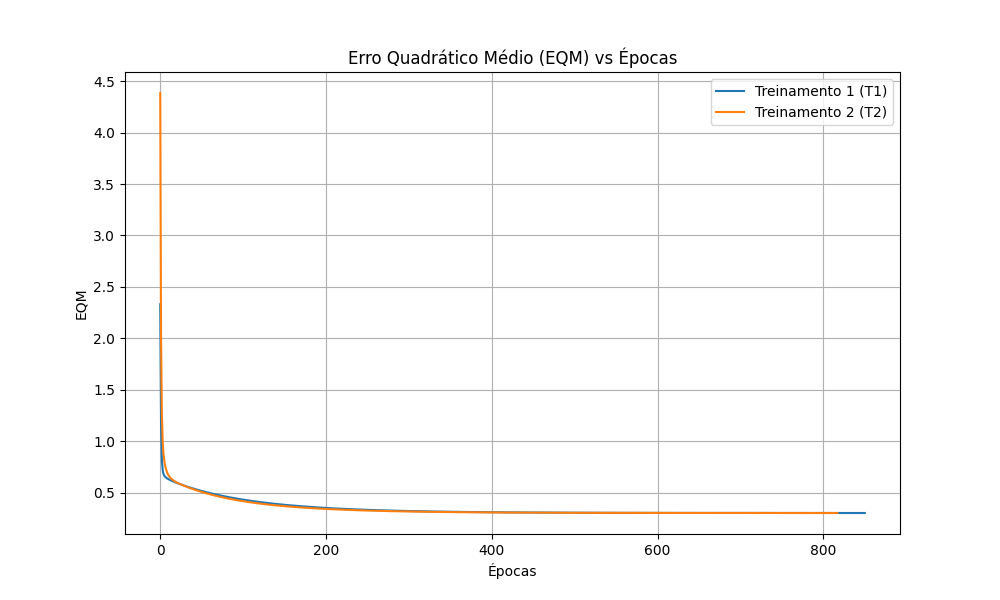

Caderno de Resoluções de Atividades
A partir da análise de um processo de destilação fracionada de petróleo observou-se que determinado óleo poderia ser classificado em duas classes de pureza {C1 e C2} a partir da medição de três grandezas {x1, x2 e x3} que representam propriedades físico-químicas. A classificação é feita com um Perceptron usando a regra de Hebb (aprendizado supervisionado) com taxa de aprendizagem $\eta = 0.01$, inicializando os pesos com valores aleatórios entre 0 e 1.
Foram executados 5 treinamentos independentes até o erro chegar a zero na base de dados de treinamento. Em cada execução, os pesos iniciais foram gerados aleatoriamente entre 0 e 1.
| Treinamento | Épocas | Bias ($w_0$) | $w_1$ | $w_2$ | $w_3$ |
|---|---|---|---|---|---|
| T1 | 401 | 3.0962 | 1.5763 | 2.5009 | -0.7385 |
| T2 | 386 | 3.1050 | 1.5580 | 2.4874 | -0.7390 |
| T3 | 424 | 3.1365 | 1.6047 | 2.5198 | -0.7464 |
| T4 | 358 | 3.0413 | 1.5454 | 2.4485 | -0.7256 |
| T5 | 327 | 2.9099 | 1.4042 | 2.4142 | -0.6965 |
O perceptron treinado foi aplicado nas novas amostras (dados de teste). Como as 5 execuções convergiram corretamente para um plano de separação global equivalente, a classificação resultante é idêntica em todos os modelos.
| Amostra | x1 | x2 | x3 | y(T1) | y(T2) | y(T3) | y(T4) | y(T5) |
|---|---|---|---|---|---|---|---|---|
| 1 | -0.3565 | 0.0620 | 5.9891 | -1 | -1 | -1 | -1 | -1 |
| 2 | -0.7842 | 1.1267 | 5.5912 | 1 | 1 | 1 | 1 | 1 |
| 3 | 0.3012 | 0.5611 | 5.8234 | 1 | 1 | 1 | 1 | 1 |
| 4 | 0.7757 | 1.0648 | 8.0677 | 1 | 1 | 1 | 1 | 1 |
| 5 | 0.1570 | 0.8028 | 6.3040 | 1 | 1 | 1 | 1 | 1 |
| 6 | -0.7014 | 1.0316 | 3.6005 | 1 | 1 | 1 | 1 | 1 |
| 7 | 0.3748 | 0.1536 | 6.1537 | -1 | -1 | -1 | -1 | -1 |
| 8 | -0.6920 | 0.9404 | 4.4058 | 1 | 1 | 1 | 1 | 1 |
| 9 | -1.3970 | 0.7141 | 4.9263 | -1 | -1 | -1 | -1 | -1 |
| 10 | -1.8842 | -0.2805 | 1.2548 | -1 | -1 | -1 | -1 | -1 |
O algoritmo do Perceptron realiza uma busca no espaço para encontrar um "hiperplano" (uma reta/plano no espaço vetorial) que consiga separar perfeitamente as classes C1 e C2.
O tempo que ele leva para encontrar esse plano depende unicamente de onde ele começou a busca. Como inicializamos o vetor de pesos com valores aleatórios diferentes a cada execução, o ponto de partida muda. Isso faz com que a trajetória de ajustes e a quantidade de passos (épocas) até o erro zerar variem significativamente.
A principal limitação do Perceptron clássico (de camada única) é que ele só consegue resolver problemas que sejam linearmente separáveis.
Isso significa que ele só terá sucesso se for possível traçar um limite reto (uma reta no plano 2D, ou um hiperplano em n-dimensões) dividindo as duas classes sem sobreposição. Se os dados possuírem uma distribuição não-linear (como no famoso problema lógico do XOR), o perceptron entrará em um loop infinito, ajustando os pesos sem parar, pois nunca conseguirá alcançar o erro igual a zero.
Um sistema envia um sinal codificado de 4 grandezas {x1, x2, x3, x4} para ajustar duas válvulas (A ou B). Durante a transmissão, os sinais sofrem interferências (ruídos). Uma rede ADALINE foi treinada com dados ruidosos para classificar se o sinal deve ir para a válvula A (-1) ou B (+1). Utilizou-se a Regra Delta, com taxa de aprendizado $\eta = 0.0025$, precisão de $10^{-6}$, e 5 inicializações aleatórias de pesos.
Foram executados 5 treinamentos rastreando os pesos iniciais, os pesos finais ao atingir a convergência do Erro Quadrático Médio (EQM) menor que a precisão, e o total de épocas.
| Treino | $w_{0_{in}}$ | $w_{1_{in}}$ | $w_{2_{in}}$ | $w_{3_{in}}$ | $w_{4_{in}}$ | $w_{0_{fin}}$ | $w_{1_{fin}}$ | $w_{2_{fin}}$ | $w_{3_{fin}}$ | $w_{4_{fin}}$ | Épocas |
|---|---|---|---|---|---|---|---|---|---|---|---|
| 1º (T1) | 0.1344 | 0.8474 | 0.7638 | 0.2551 | 0.4954 | 1.8131 | 1.3128 | 1.6423 | -0.4277 | -1.1778 | 851 |
| 2º (T2) | 0.9560 | 0.9478 | 0.0566 | 0.0849 | 0.8355 | 1.8131 | 1.3127 | 1.6421 | -0.4281 | -1.1777 | 818 |
| 3º (T3) | 0.2380 | 0.5442 | 0.3700 | 0.6039 | 0.6257 | 1.8131 | 1.3129 | 1.6423 | -0.4277 | -1.1778 | 878 |
| 4º (T4) | 0.2360 | 0.1032 | 0.3961 | 0.1550 | 0.0665 | 1.8131 | 1.3128 | 1.6422 | -0.4279 | -1.1777 | 849 |
| 5º (T5) | 0.6229 | 0.7418 | 0.7952 | 0.9425 | 0.7399 | 1.8131 | 1.3129 | 1.6424 | -0.4276 | -1.1778 | 857 |
Gráfico dos valores de Erro Quadrático Médio (EQM) ao longo do treinamento para os dois primeiros cenários (T1 e T2).

Resultados da classificação das 15 novas amostras ruidosas por cada treinamento (Válvula A = -1, Válvula B = +1).
| Amostra | y(T1) a y(T5) | Resultado |
|---|---|---|
| 1 a 2 | -1 | Válvula A |
| 3 | +1 | Válvula B |
| 4 a 5 | -1 | Válvula A |
| 6 a 9 | +1 | Válvula B |
| 10 a 11 | -1 | Válvula A |
| 12 | +1 | Válvula B |
| 13 a 14 | -1 | Válvula A |
| 15 | +1 | Válvula B |
Ao contrário do Perceptron (que possui múltiplos planos de separação válidos quando os dados são linearmente separáveis), o modelo ADALINE busca minimizar o Erro Quadrático Médio (EQM) contínuo.
Como a função de custo (EQM) para uma rede com saída linear é uma superfície quadrática estritamente convexa (um paraboloide multidimensional), ela possui um único ponto de mínimo global.
Portanto, não importa de onde o algoritmo comece (pesos iniciais aleatórios), a Regra Delta orientada pelo gradiente sempre "deslizará" a curva em direção ao fundo desse mesmo "poço". O número de épocas varia porque a distância do ponto de partida até esse fundo muda, mas o ponto de destino final (os pesos ótimos) é matematicamente o mesmo.